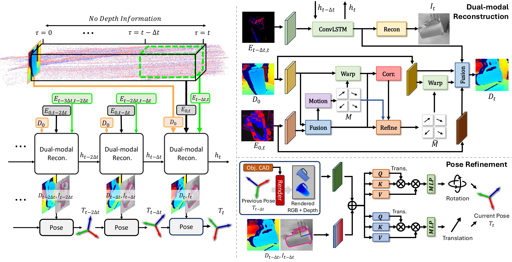

Event cameras provide microsecond latency, making them suitable for 6D object pose tracking in fast, dynamic scenes where conventional RGB and depth pipelines suffer from motion blur and large pixel displacements. We introduce EventTrack6D, an event-depth tracking framework that generalizes to novel objects without object-specific training by reconstructing both intensity and depth at arbitrary timestamps between depth frames.
Conditioned on the most recent depth measurement, our dual reconstruction recovers dense photometric and geometric cues from sparse event streams. Our EventTrack6D operates at over 120 FPS and maintains temporal consistency under rapid motion. To support training and evaluation, we introduce a comprehensive benchmark suite: a large-scale synthetic dataset for training and two complementary evaluation sets, including real and simulated event datasets. Trained exclusively on synthetic data, EventTrack6D generalizes effectively to real-world scenarios without fine-tuning, maintaining accurate tracking across diverse objects and motion patterns.

Comparison 1 — e.g. Ours vs. FoundationPose
Comparison 2 — e.g. Ours vs. ETAP
Result 1 — e.g. Cracker Box
Result 2 — e.g. Hammer
Result 3 — e.g. Mustard Bottle
HO3D Result 1
HO3D Result 2
HO3D Result 3
If you find our work useful, please consider citing:
@inproceedings{kang2026event6d,
title = {Event6D: Event-based Novel Object 6D Pose Tracking},
author = {Kang, Jae-Young and Cho, Hoonhee and Lee, Taeyeop
and Kang, Minjun and Wen, Bowen
and Kim, Youngho and Yoon, Kuk-Jin},
booktitle = {Proceedings of the IEEE/CVF Conference on
Computer Vision and Pattern Recognition (CVPR)},
year = {2026}
}